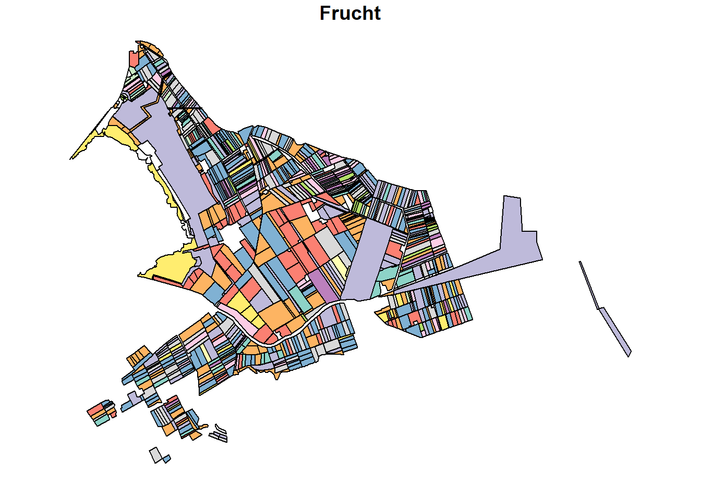
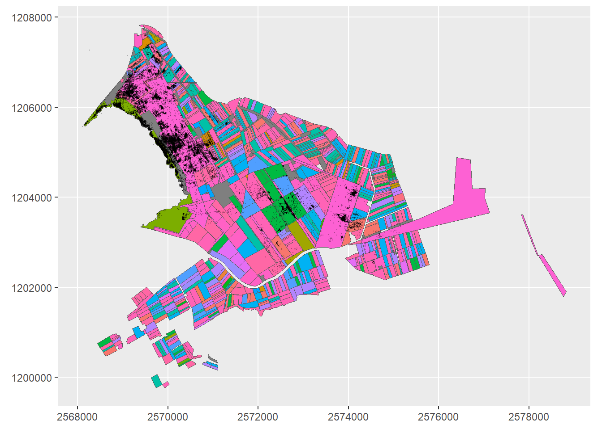

── Column specification ────────────────────────────────────────────────────────
Delimiter: ","
chr (2): TierID, TierName
dbl (3): CollarID, E, N
dttm (1): DatetimeUTC
ℹ Use `spec()` to retrieve the full column specification for this data.
ℹ Specify the column types or set `show_col_types = FALSE` to quiet this message.
fanel <-read_sf("datasets/Feldaufnahmen_Fanel.gpkg")plot(fanel["Frucht"])plot(wildschwein_BE, add =TRUE) #add to same map
Warning in plot.sf(wildschwein_BE, add = TRUE): ignoring all but the first
attribute

ggplot(fanel) +geom_sf(aes(fill = Frucht))+geom_sf(data = wildschwein_BE, alpha = .3, pch =".")+#pch defines the type of visualisation shapetheme(legend.position ="none")+coord_sf(datum =2056) # gives swiss labelling of coordinates

# When adding a tlm, just visualize first, to see if the area is as expected
use st_join to annotate wildboar data with landuse